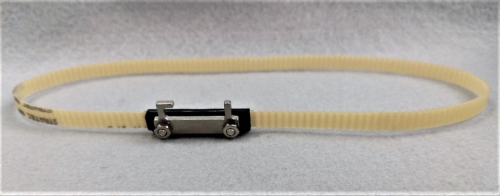
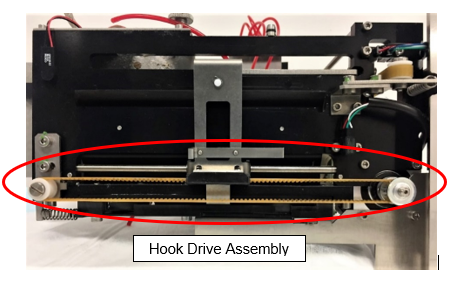
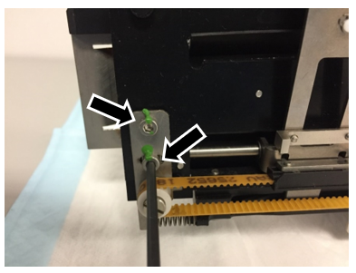
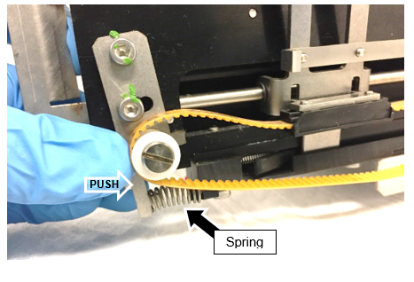
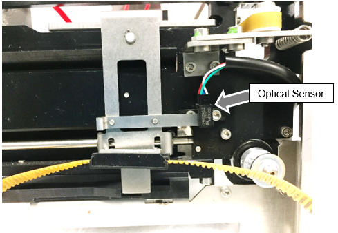
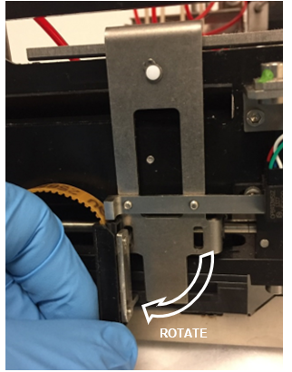
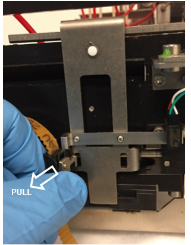

Output Queue Hook Drive Belt Assembly Removal and Replacement
Parts and Materials Required
 Output Queue Hook Drive Motor Belt
Output Queue Hook Drive Motor Belt

Time Required
- 1.5 hours (30 minutes if Output Queue is not removed)
Procedure

|
Note— Removing the Output Queue (OQ) module from the system (Step 1) is an optional step which can be done to improve access to the Hook Drive Assembly. It is not required. The images below show the OQ module removed for clarity of the images. |
|
|
Note— If you will be removing the Output Queue module, move the sample pipettor forward and to the right so that it is out of the way when you remove the Output Queue module. |
- If desired or needed, remove the Output Queue (OQ) and place the module on a bench pad.
- Locate the Hook Drive Assembly.

- Locate the two screws that are connected to the belt-tensioner spring. Use a 3mm hex driver or Allen wrench to loosen, but do not remove, both screws.

- Remove the belt from the drive sprocket and idler sprocket.
- Push the plastic idler pulley to compress the spring and loosen the belt, then remove the belt from both sprockets.
Note— Take care to not lose the spring (see the black arrow in the photo) as the belt is removed. 
- Slide the hook all the way to the motor-end of the drive.
Note— Take care to not damage the optical sensor (see the gray arrow in the photo). 
- Remove the belt assembly from the hook assembly. The two tabs on the belt attach to the hook assembly through two slots. One of the tabs slides out freely as shown in the photos below.
- Rotate the clip vertically.

- Lift the clip upward and pull outward to remove the other tab from the hook assembly.

- Install the new belt assembly by reversing the steps above.
Note—If possible, apply a spot of tamper detection paint to each of the two screws that were loosened in Step 3. - If the OQ Module was removed (Step 1), reinstall the OQ module.
- Teach the Linear Distributor to the OQ module.
Verification
- Start the Panther System Software, start a prime and endure the prime passes.
 button at the top of the page to send feedback, comments, or change requests.
button at the top of the page to send feedback, comments, or change requests.